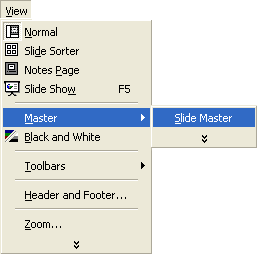
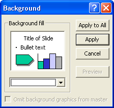

Free
powerpoint
Tutorials
|
Free
powerpoint
Tutorials
|
|
 home home |
Stay at Home and Learn | ||||
Format a Master Slide for our Design Template |
|||||
|
You've already created a Master Slide in a previous section of this course, so we won't go through everything again. But if you have a presentation open in PowerPoint, click File > Close. Then click File > New. In PowerPoint 2003, select Blank Presentation from the Task Pane on the right hand side. You'll get a slide with a bulleted list. Locate the blank slide in the Task Pane, and click the arrow: From the menu, select Apply to Selected Slides, as in the image above. In PowerPoint 2000, you'll see the New Presentation screen again. Click on the General tab, then select Blank Presentation. Click OK, and you should see the New Slide dialogue box appear. Select the Blank slide, as in the image below: For both 2000 and 2003 users, once you have a blank slide, click View > Master > Slide Master from the menu bar at the top of PowerPoint:  You will be taken to the Master Slide view, and the slide should look like this:
From here, you can redesign any of the areas you see above. First, we'll add a background. Click Format from the menu at the top of PowerPoint. From the Format menu, select Background. You'll see this small dialogue box appear:  Click the black arrow on the dropdown list, and select Fill Effects:
From the Fill Effects dialogue box that appears, click the Picture tab on the end. Browse for a picture on your computer. The one we're going to insert is amongst the file that you downloaded at the start of the book, in the folder called backgrounds. Your dialogue box will then look like this:
Click OK. When you get back to the small Background dialogue box, click Apply. Your Master Slide will then look like this: With the background in place, we can format the other areas. Highlight the text in the Title area "Click to edit Master title style". Change the Font to Arial, and the size to 36. Click Format > Font from the menu bar, and select a colour for the Font. We went for a light blue colour: Format the rest of the AutoLayout areas in the same way. Don't forget the Footer area at the bottom. Format the slide number and date, if you prefer: We went with a dark blue colour in the main text area, and Arial for the font. For the footer, the font was again Arial, but size 12 and in white. If you want, you can resize and move any of the text areas. We did this before when setting up the Master Slide, so won't go through it again. When you're happy with your Master Slide, click Close on the small dialogue box. Or click View > Normal from the menu bar at the top. When you get back to the main screen, you should see the formerly white blank canvas you started with change to that of the background you added for the Master Slide.
In the next part, we'll take as look at Title slides.
|
||||